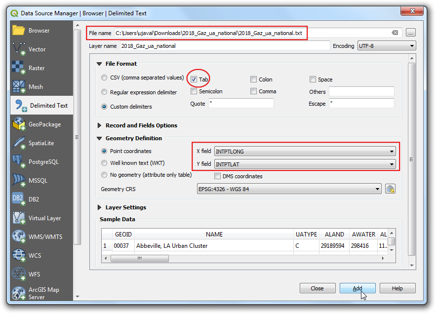
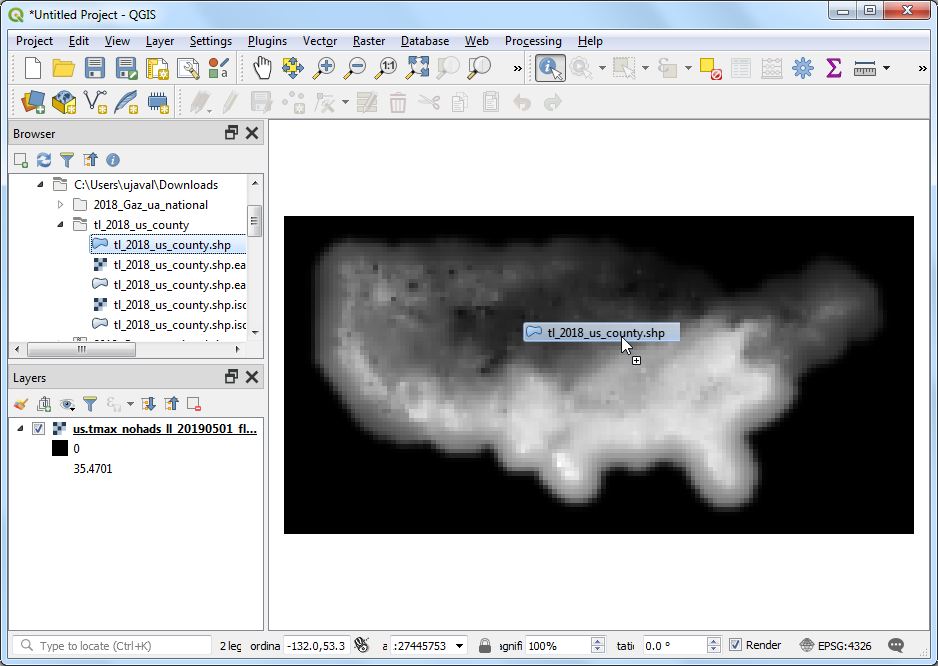

Ujaval Gandhi
Ujaval GandhiMonsters nemen van rastergegevens met behulp van punten of polygonen (QGIS3)¶
Vele wetenschappelijke en milieu-gegevenssets zijn gerasterde rasterafbeeldingen. Hoogtegegevens (DEM) worden ook gedistribueerd als rasterbestanden. In deze rasterbestanden wordt de parameter die wordt weergegeven gecodeerd als de pixelwaarden van het raster. Vaak moet men de pixelwaarden van bepaalde locaties verzamelen of ze samenvoegen over enkele gebieden. Deze functionaliteit is beschikbaar in QGIS via algoritmes van Processing - Monster rasterwaarden voor puntlagen en Gebiedsstatistieken voor polygoonlagen.
Overzicht van de taak¶
Gegeven een raster van dagelijkse maximum temperaturen op het vasteland van de VS, moeten we de temperatuur uit een puntenlaag voor alle stedelijke gebieden uitnemen en de gemiddelde temperatuur voor een polygoonlaag berekenen voor elke county in de VS.
Andere vaardigheden die u zult leren¶
Meerdere lagen uit de inhoudsopgave van QGIS selecteren en verwijderen.
De gegevens ophalen¶
NOAA’s Climate Prediction Center verschaft GIS-gegevens gerelateerd aan temperatuur en neerslag in de VS. Download het laatste rasterbestand voor de maximum temperaturen. Het bestand zal zijn genaamd us.tmax_nohads_ll_{YYYYMMDD}_float.tif
We zullen een CSV-bestand gebruiken vanaf 2018 US Gazetteer dat de stedelijke gebieden in de VS weergeeft. Download het bestand Urban Areas Gazetteer File.
US Census Bureau provides TIGER/Line Shapefiles. U kunt de FTP site bezoeken en het bestand Census Tracts Shapefile downloaden.
Voor het gemak kunt u direct een kopie van de gegevensset downloaden vanaf de links hieronder:
us.tmax_nohads_ll_20190501_float.tif
Gegevensbronnen: [NOAACPC], [USGAZETTEER] [TIGER]
Procedure¶
Pak zowel
2018_Gaz_ua_national.zipalstl_2018_us_county.zipuit in een map op uw computer. Open QGIS en zoek naar het bestandus.tmax_nohads_ll_20190501_float.tifin de QGIS Browser en sleep het naar het kaartvenster.

U zult een nieuwe rasterlaag
us.tmax_nohads_ll_20190501_floatzien geladen in het paneel Lagen. Deze rasterlaag bevat de maximum temperaturen die zijn opgenomen op elke pixel in graden Celsius. Vervolgens zullen we het bestand met punten van de stedelijke gebieden laden. Dit bestand komt als een tekstbestand in de indeling Tab Separated Values (TSV). Klik op de knop Databronnen beheren openen op de werkbalk Databronnen beheren.

Schakel naar de tab Tekengescheiden tekst. Klik op de knop … naast Bestandsnaam en specificeer het pad naar het tekstbestand dat u hebt gedownload. Selecteer, in het gedeelte Bestandsindeling, Zelfgekozen tekstscheiders en selecteer Tab. Selecteer
INTPTLONGals het X-veld enINTPTLATals het Y-veld. Klik op Toevoegen en dan op Close.

Een nieuwe puntenlaag
2018_Gaz_ua_nationalzal worden geladen in het paneel Lagen. Nu zijn we klaar om de waarden uit de rasterlaag uit te nemen voor deze punten. Ga naar .

Zoek en lokaliseer het algoritme . Dubbelklik om het te starten.

Selecteer
2018_Gaz_ua_nationalals de Invoer puntenlaag. Selecteerus.tmax_nohads_ll_20190501_floatals de Rasterlaag waarvan monsters moeten worden genomen. Vergroot de Gevorderde parameters en voertmaxin als Voorvoegsel uitvoerkolom. Klik op Uitvoeren. Klik, als de verwerking is voltooid, op Close.

Een nieuwe laag
Monsterpuntenzal worden geladen in het paneel Lagen. Selecteer het gereedschap Objecten identificeren op de werkbalk Attributen en klik op een willekeurig punt. U zult de attributen zien worden weergegeven in het paneel Identificatieresultaten. U zult een nieuw attribuut zien toegevoegd aan elk object, genaamd tmax_1. Dat is de pixelwaarde van de rasterlaag die is uitgenomen op de locatie van het punt. De 1 geeft het bandnummer weer van het raster. Als de rasterlaag meerder banden zou hebben gehad, zou u meerdere nieuwe kolommen in de uitvoerlaag hebben gezien.

Het eerste gedeelte van onze analyse is voltooid. Laten we de lagen die niet meer nodig zijn verwijderen. Houdt de Shift-toets ingedrukt en selecteer de lagen
Monsterpuntenen2018_Gaz_ua_national. Klik met rechts en selecteer Verwijderen om ze uit QGIS te verwijderen. Selecteer OK indien gevraagd wordt 2 legenda-items verwijderen?.

Nu zullen we de laag met county’s gebruiken om monsters te nemen uit het raster en de gemiddelde temperatuur berekenen voor elke county. Zoek naar het bestand
tl_2018_us_county.shpin de QGIS Browser en sleep het naar het kaartvenster.

Een nieuwe laag
tl_2018_us_countyzal worden geladen in het paneel Lagen. Ga naar .

Zoek en lokaliseer het algoritme en dubbelklik om het te starten.

Selecteer
us.tmax_nohads_ll_20190501_floatals de Rasterlaag entl_2018_us_countyals de Vectorlaag bevat zones. Voertmax_in als Voorvoegsel uitvoerkolom. Klik op de knop … naast Statistieken om te berekenen.

Selecteer alleen de waarde
Gemiddeldeen klik op OK.

Klik nu op de … naast Zone-statistieken en selecteer de optie Opslaan naar bestand om de uitvoer op te slaan.

Blader naar de map waar u de uitvoer wilt opslaan. Sla de uitvoerlaag op als
us_county_tmax.shp. Klik op Uitvoeren om te beginnen met het verwerken. Het algoritme kan een paar minuten vergen om te voltooien en u zult de uitvoerlaag zien toegevoegd zodra de verwerking is voltooid. Klik op Sluiten.

Klik met rechts op de laag
us_county_tmaxen selecteer Attributentabel openen.

U zult zien dat een nieuwe kolom, genaamd
tmax_mean, is toegevoegd in de attributentabel. Deze bevat de gemiddelde waarde voor de temperatuur die is uitgenomen uit de polygoon voor elk object. Er zijn enkele nulwaarden omdat die county’s (behorende tot Alaska, Hawaii en Puerto Rico) buiten het bereik van de rasterlaag liggen.

If you want to give feedback or share your experience with this tutorial, please comment below. (requires GitHub account)